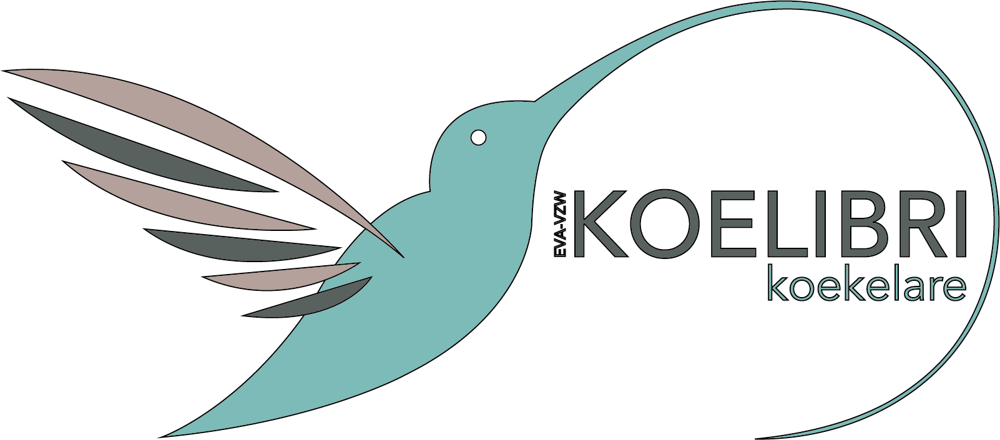

Het logo van DCO Koelibri is niet zomaar een logo, het vertelt ons een verhaal. Zoals bij de inleiding is gezegd is het woord Koelibri tweedelig opgebouwd, Koe staat voor Koekelare. Daarnaast verwees het ook naar een kolibri, die de insecten opeet en zo de natuur proper houdt. Dit is ook het motto van de onderneming.
Een kolibri is een kleine vogel met lange kleurrijke vleugels en een lange snavel, waardoor het beeldmerk is opgebouwd uit de vogel en de lange snavel. Deze verwijst naar de poetshulpen die zo hygiënisch en proper te werk gaan. De vleugels zijn een brede waaier van aanbod die de onderneming aanbiedt aan particulieren. Kortweg ze zien het graag schoon.
Het beeldmerk en tekst worden niet zomaar bij een element geplaatst, maar zijn doelbewust op elkaar afgelijnd. Op de afbeelding tonen de oranje lijnen de samenhang van het beeld van hoe het is opgebouwd. De compositie moet zo behouden worden.

Bij het plaatsen van het logo mag dit niet te dicht bij andere elementen zijn. Op de afbeelding zie je met welke witruimte er precies rekening moet worden gehouden om het te positioneren.

Logo met drie kleuren zal het meest gebruikte logo zijn. De kleuren van het logo zijn dan ook de huisstijlkleuren van DCO Koelibri. Voor meer info kan je bij kleuren terecht. Indien er omwille van technische redenen nood is aan beperkt kleurgebruik kan er geopteerd worden om het logo toe te passen in 1 kleur. We beschikken zowel over positieve als negatieve varianten.
Het zwarte logo kan enkel gebruikt worden, indien het drukwerk niet in kleur gedrukt zal worden. Deze variant is ook de enige die in gebruik mag genomen worden. Grijswaarden wordt niet aanvaard.

Ook hebben we het witte logo, deze wordt gebruikt op donkere of drukke achtergronden. Dit kan het geval zijn bij afbeeldingen.

Aan het logo mag er niets veranderd worden. Er bestaan voldoende varianten om in verschillende toepassingen te gebruiken. Hieronder een aantal puntjes die niet kunnen:
Het kleurenlogo kan en mag niet op een afbeelding of gekleurde achtergrond geplaatst worden. Zo komt het logo niet sterk uit. Indien er toch gebruik wil gemaakt worden van een drukke achtergrond, maak dan gebruik van het witte logo. Bij het plaatsen, zorg ervoor dat het beeld niet verstoord wordt. Kijk goed waar te positioneren en gebruik eventueel contrasten.


Een omlijning rond het logo mag nooit gedaan worden
Zorg ervoor dat het logo steeds volledig te zien is.

Het logo mag niet vervormd worden, dit heeft geen uitstraling in de communicatie naar buiten toe.
Het originele logo mag nooit in een andere kleur omgezet worden, behalve in de kleuren van de huisstijl.
Zet je het logo in grijswaarden, dan mag deze niet gebruikt worden. Kies dan voor het zwarte logo.